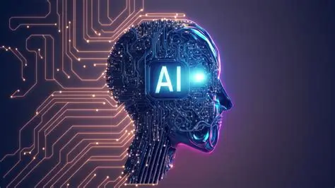

La Inteligencia Artificial es un conjunto de técnicas y programas que permiten a las máquinas realizar tareas que requerirían “inteligencia” si las hiciera una persona. Una analogía útil: piensa en la IA como en una receta culinaria. Los ingredientes son datos (fotos, textos, números), el chef es el algoritmo (las instrucciones que transforman los datos) y el plato final es la acción: reconocer una cara, traducir un párrafo, o decidir si un crédito bancario procede. Algunas recetas son sencillas (reglas básicas), otras requieren un chef maestro que aprendió con mucha práctica (aprendizaje automático o machine learning).

Fue en el año 1843 cuando Ada Lovelace escribió que la Máquina Analítica (Babbage, 1864) “no tiene pretensiones de originar nada.
Puede hacer todo lo que sepamos ordenarle que haga” ( Menabrea y Lovelace, 1843) . Esta afirmación fue definida entonces como la “objeción de Lovelace”
por Alan Turing, quien también proporcionó una formulación alternativa: una máquina nunca puede “tomarnos por sorpresa ” (Turing, 1950).
Este fue solo el comienzo de una discusión filosófica en curso, que a menudo ha incluido elementos psicológicos, en torno a la creatividad humana
La objeción. En 1843, Ada Lovelace escribió notas sobre la Máquina Analítica de Babbage. En ellas decía que la máquina no pretende originar nada y solo puede hacer lo que sabemos ordenarle.
Turing la bautizó “la objeción de Lady Lovelace” en su artículo de 1950.
La respuesta de Turing. Se apoya en la imprevisibilidad de las máquinas y en el experimento mental de la “máquina-niño”, es decir,
una máquina que aprende. Además, sostiene que las máquinas lo sorprenden con gran frecuencia.
También reformula la objeción como “una máquina nunca puede tomarnos por sorpresa”. Y señala que Lovelace carecía de la evidencia que hoy tenemos,
de modo que su afirmación no implica que la propiedad sea imposible.
En conclusión, la objeción de Lovelace sigue siendo una pregunta abierta, aunque el contexto tecnológico haya cambiado por completo. Lovelace sostuvo en 1843 que una máquina solo ejecuta lo que se le ordena. Turing respondió que esa postura dependía de la evidencia limitada de su época y que una máquina capaz de aprender podría sorprendernos y escapar de lo previsto por su programador. Hoy, los grandes modelos de lenguaje reavivan el debate. Producen textos valiosos y a veces novedosos, pero algunos autores sostienen que su funcionamiento probabilístico solo permite una creatividad combinatoria o exploratoria, sin intención ni autoevaluación propias. Por ello, la cuestión de fondo ya no es si una máquina puede sorprendernos, sino si esa sorpresa constituye una verdadera originalidad o solo una extensión del diseño humano.